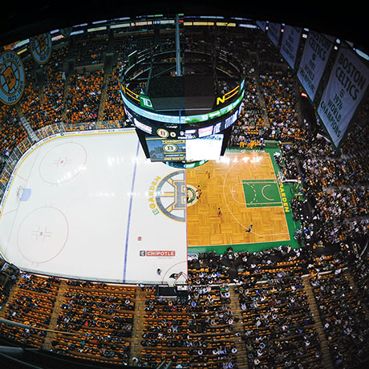

The Boston Celtics are an American professional basketball who compete in the National Basketball Association (NBA). The team was founded in 1946 as one of the original eight teams. The Celtics are tied for the most NBA championships at 17 with the Los Angeles Lakers. They hold the record for most recorded wins of any NBA team in history. Some of their biggest stars throughout their history include Larry Bird, Bill Russell, John Havlicek, Paul Pierce, Jayson Tatum, and many more. Four of these players have won the NBA Most Valuable Player Award for a record total of 10 MVPs.
The Boston Bruins are a professional ice hockey team who compete in the National Hockey League (NHL). The team was founded in 1924 which makes them the third-oldest active team in the NHL. The Bruins are one of the original Six NHL teams, and they have won a total of six Stanley Cup Championships which is tied for the fourth-most of any team. The team plays at the TD Garden in which the Celtics also play.
The Bruins have a long successful history with many championships in the early and mid-1900’s then not winning a Stanley cup from 1972-2011 (39 years). They’ve had so many great players throughout the years which include Bobby Orr, Phil Esposito, Ray Bourque, Cam Neely, Patrice Bergeron, Zdeno Chara, and many more. The last championship the Bruins won was in 2011, but they have reached the Finals two separate times in 2013 and 2019. This past season the Bruins broke many NHL records in which they set the new all-time record for most wins and most points in a single-season, but they lost in the first round of the playoffs.